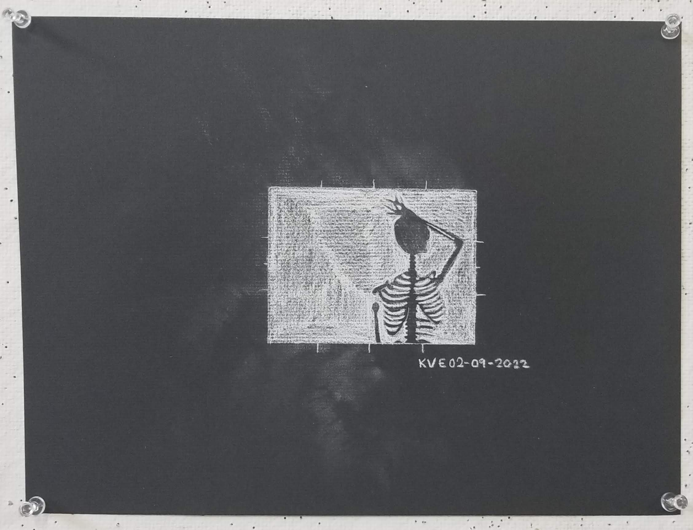
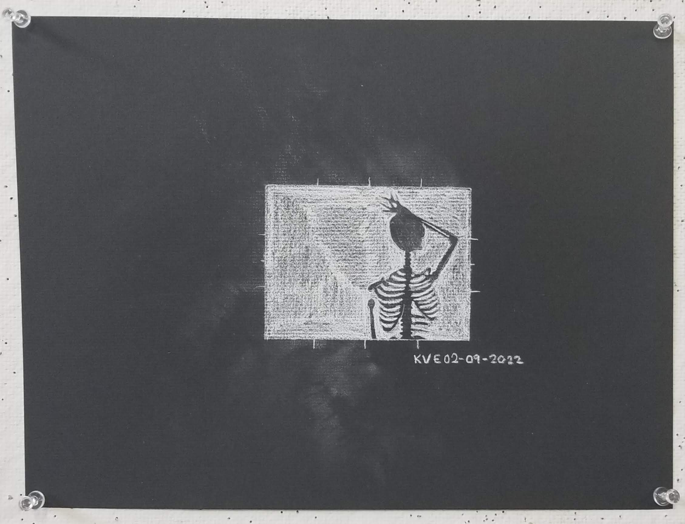

About
Hi, My name is Kristiana and I am a graphic communications major at the University of Wisconsin Eau Claire. I am from a small southern Wisconsin town, just south of Madison. I enjoy being creative and I spend some of my free time doing just that. When not being creative, I enjoy spending time outside and time with family and friends, among other activities.
Due to the fact that I recently declared my major, I do not have a lot of work experiance specific to graphic communications. For the most part, I have done art just as a hobby and in different forms. This website will focus on some of the things that I have done including drawing, photography, and a few projects that I designed while in a graphic design class.
Email me at:
ENGELKV7387@UWEC.EDU
EmailArt
Works from painting class:


Works from drawing class:
 



Graphic Design:
These are projects I completed while in a graphic design class.


Photography:
Photography class prints 2022:


Other photos from a previous class and personal shoots: